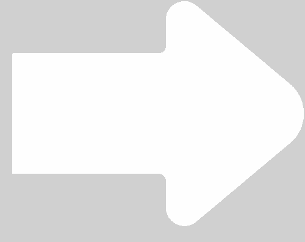

Quem foi o primeiro Hater da Patogang?
Karagoni
Trava Rato
Jpsiqueiran
Pedroblema

Quem foi os 3 primeiros membros da Patogang?
Koschino, Verde e Flavio
Davi, Gabriel e Juuder
M4tz, Koschino, Juuder
Juuder, Theo, M4tz
Quem perdeu o primeiro artefato da house? e perdeu o que?
Koschino, Mysterious Artifact
Juuder, Nightstone
Pato, Rift gem
Fire, Mysterious Artifact
Quem é o cara mais chato de pegar grip de scroom na House?
Killer
Koschino
Juuder
Pato
Quem é o desses quatro horriveis que no mínimo consegue fazer alguma coisa nos Ganks
Flávio
Ninguém
Juuder
Verde
Quem são os Traidores da PatoGang?
Nizzu e Guilherme
Arth e Fire
Gabriel e Davi
Gerprato e Killer
Quem é o Trio dos Kids da Patogang?
Flavio, Koschino e Verde
Gabriel, Davi e Pato
Juuder, M4TZ e Davi
Pato, Fire e Killer
Qual foi o primeiro esconderijo da House?
Biblioteca de Sentinel
Sanguine Shrine
Deep Sunken (perto do void)
Labirinto de Sentinel
Quem ganharia em um Battle Royale de apenas freshies?
Davi
Juuder
Pato
Koschino
QUEM FOI WILL CITIZENS?
Ashiin Oni, do Pato
Fischeran Dsage, do Juuder
Rigan Druida, do Pato
Morvid Faceless, do Gabriel
Carregando
SUA NOTA: